Portafolio
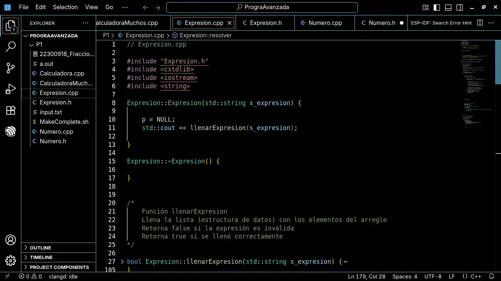
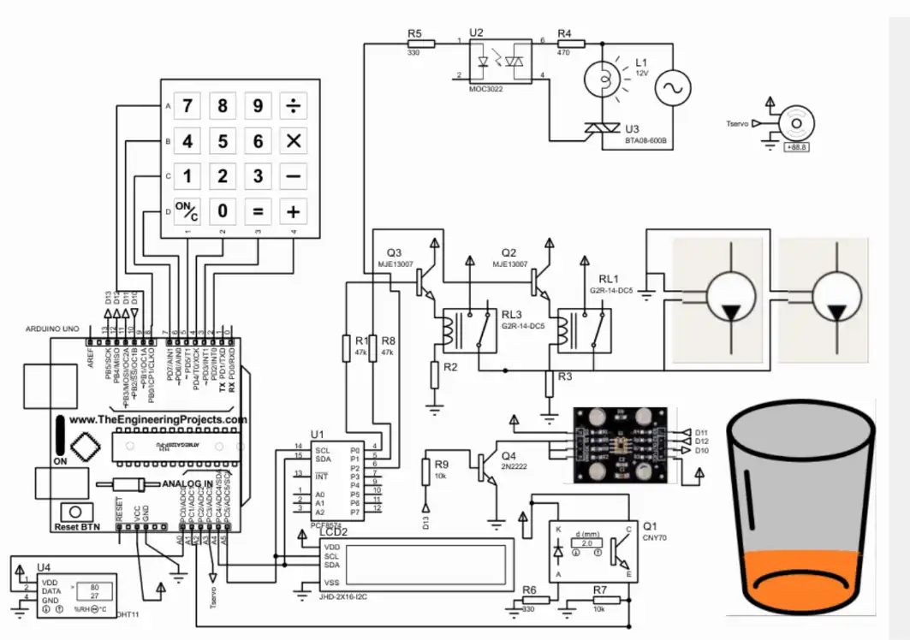
 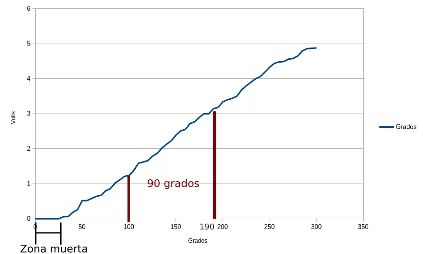
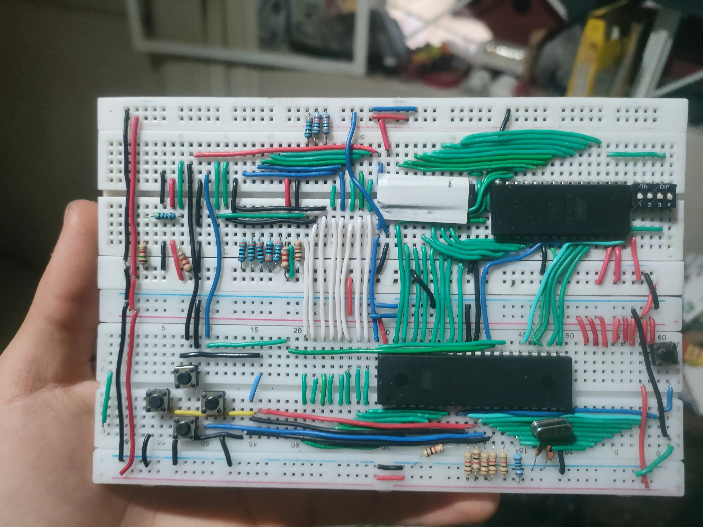
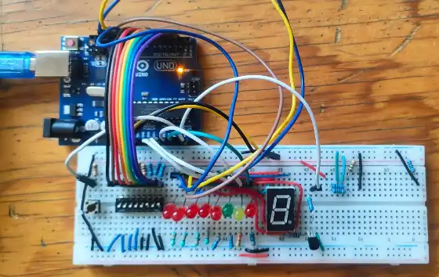
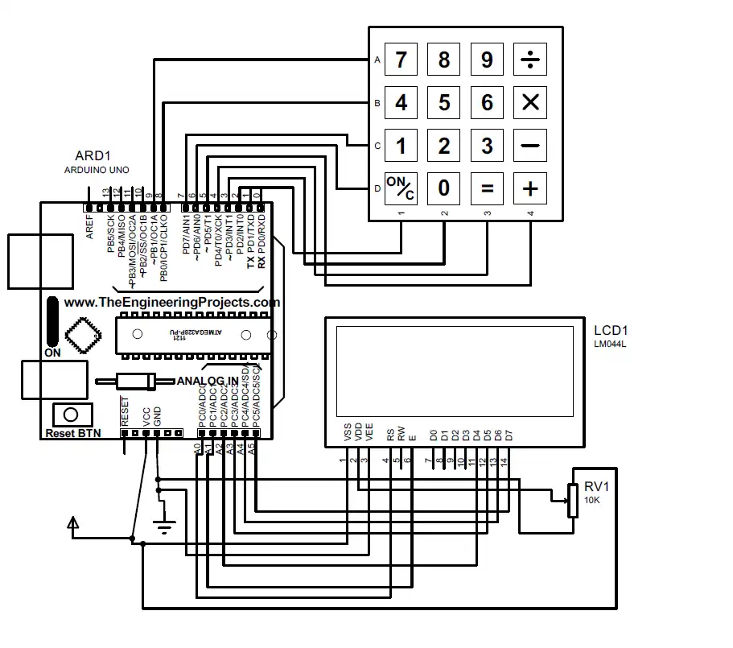
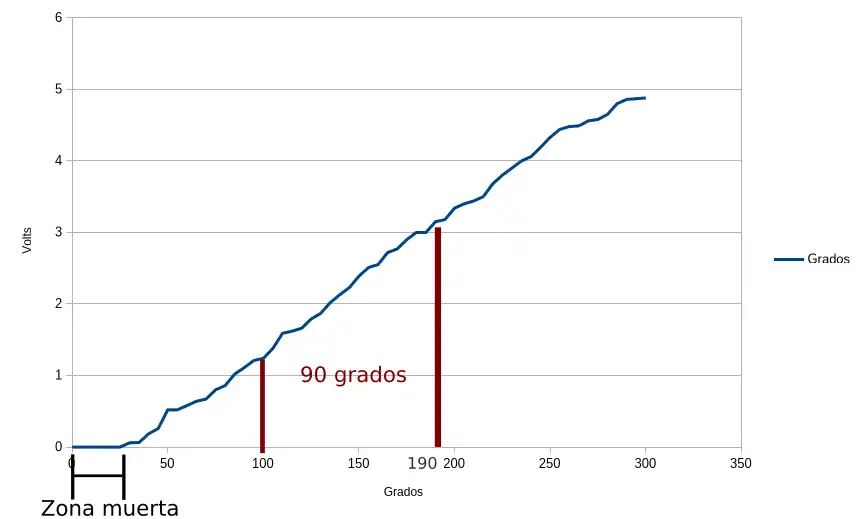
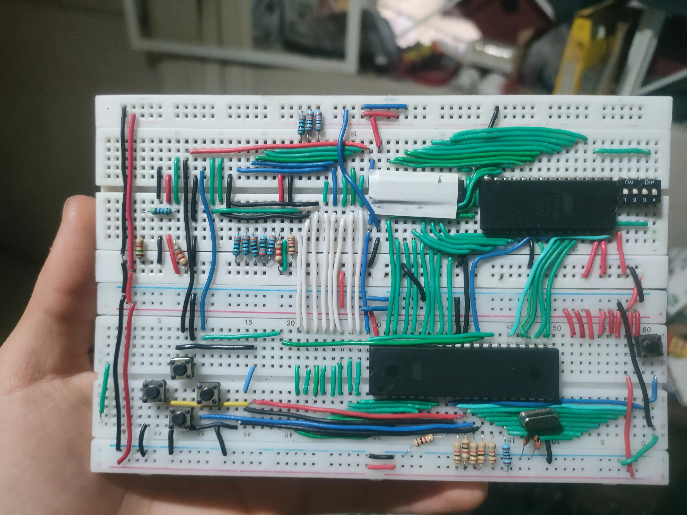
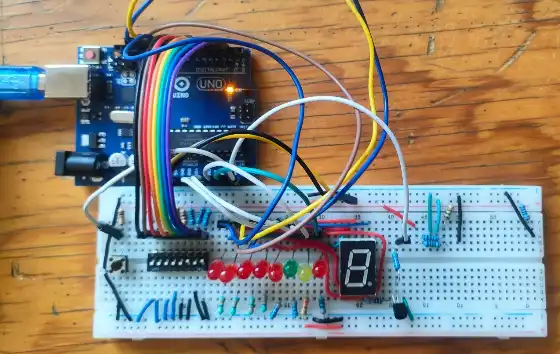
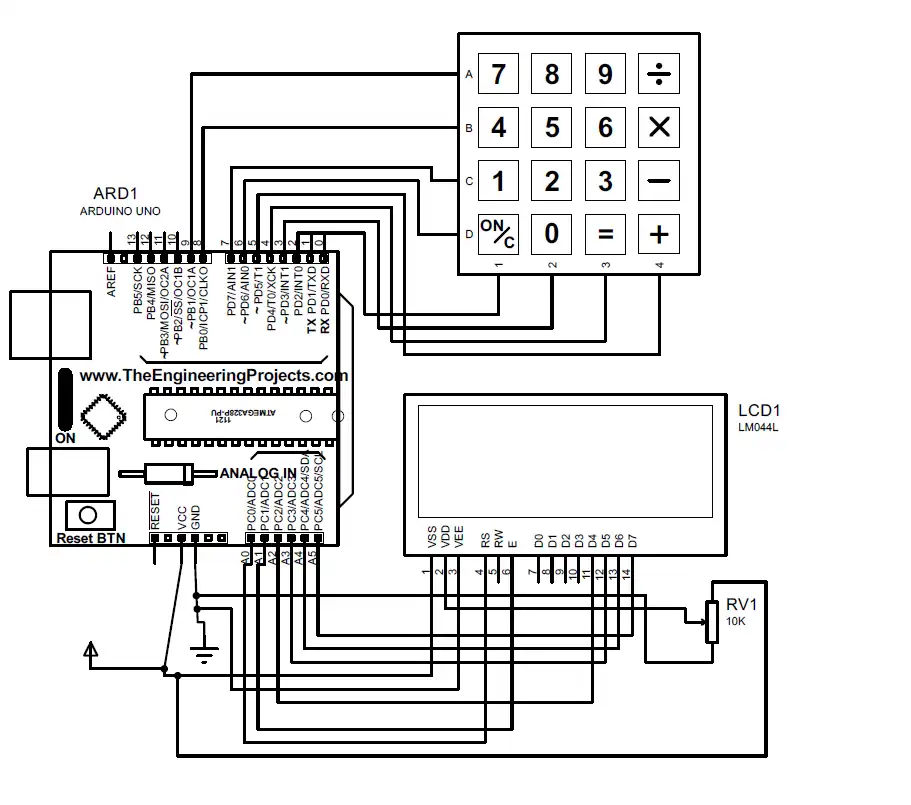
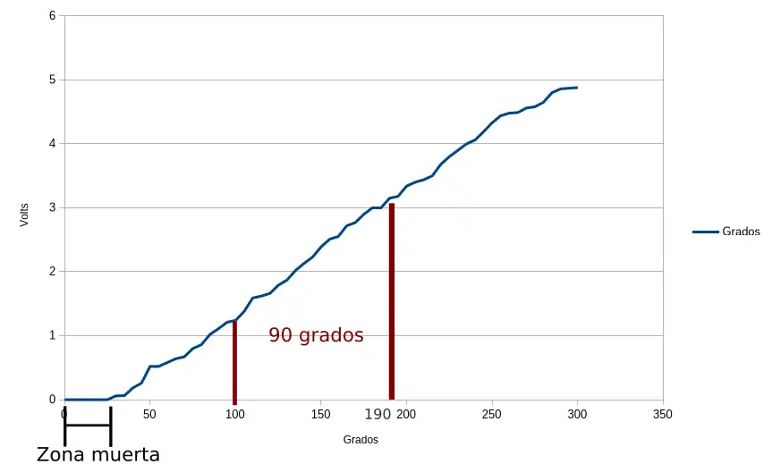
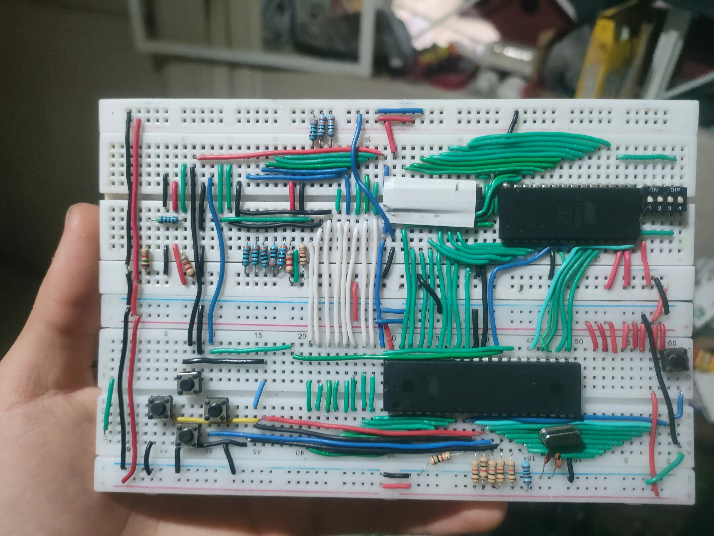
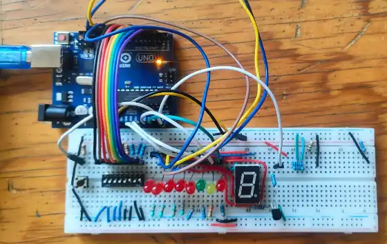
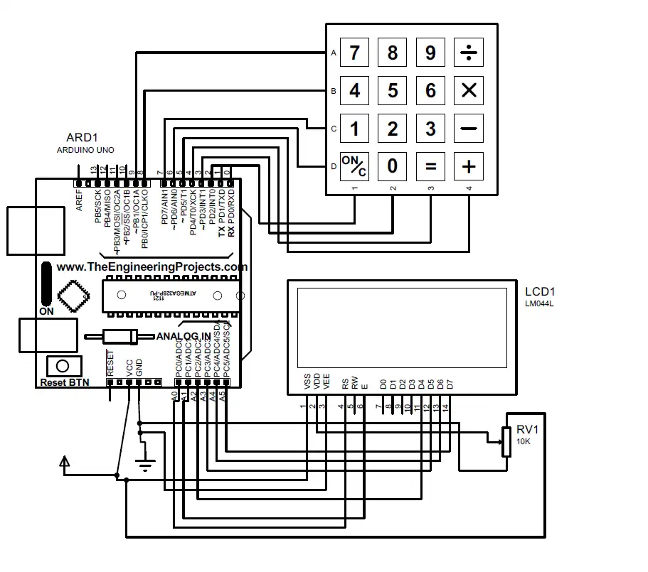
Adro Yael Ornelas Ornelas
18 años
Juan Álvarez 341 Z
7B1
Tecnólogo en Desarrollo de Software
Estudiante actual del Centro de Enseñanza Técnica Industrial (CETI) plantel Colomos, gran entusiasta de la programación a bajo nivel, como sistemas operativos y microcontroladores, usuario activo de Arch Linux y programador frecuente del ESP32, con la inspiración del escritor más sobrio y mortal de algún día hacer algo que ayude a un numéro mayor de personas de las que puedo conocer en mi día a día, con el objetivo de visitar el país de Alemania para aprender las cosas buenas de allá, traerlas aquí y llevar las cosas buenas de aquí a allá.
Todo lo anterior abarca lo académico y lo profesional y lo social, pero que es esto que está sucediendo?
Se llama vida y todos, querido lector, la adolecemos y la disfrutamos, así que, sea tomando conciencia de la respiración, pensar un poco en metafísica o observar detenidamente realidad, sea lo que sea, lo que sea, lo que seas, si puede inspirar, que inspire!!!
Y yo me sentiría alegre de inspirar a todo aquél que su camino actual resulte bochornoso.
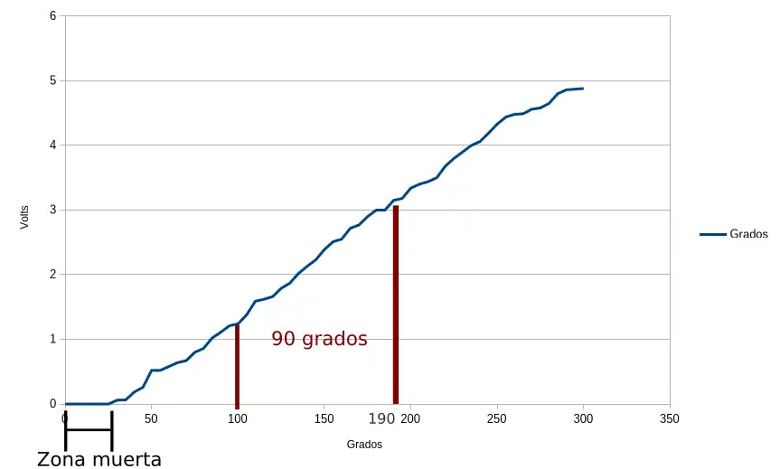
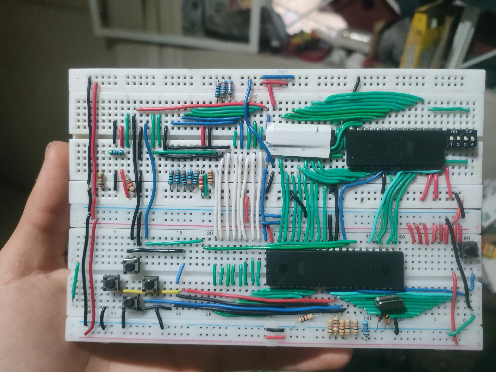
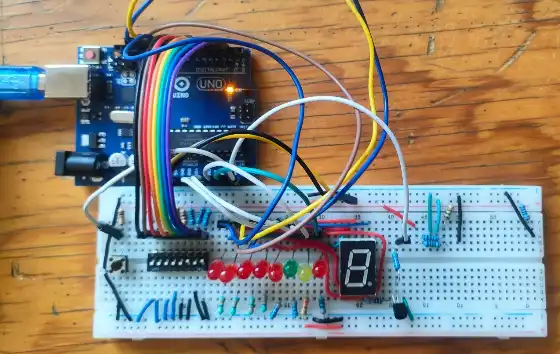
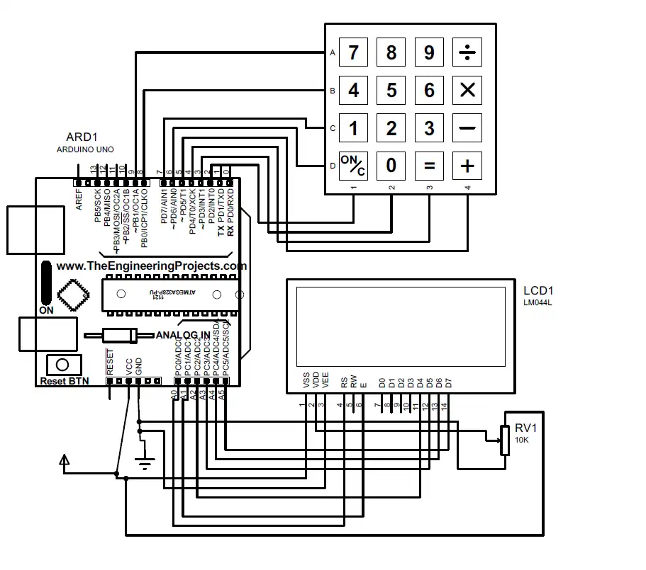